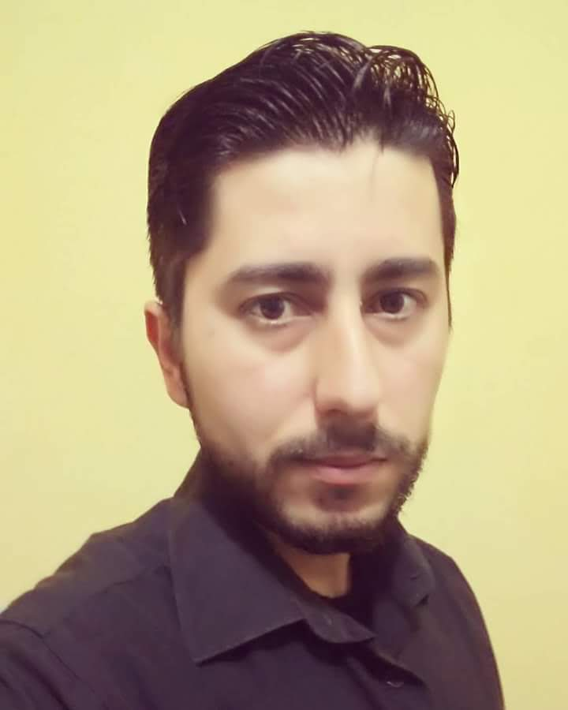
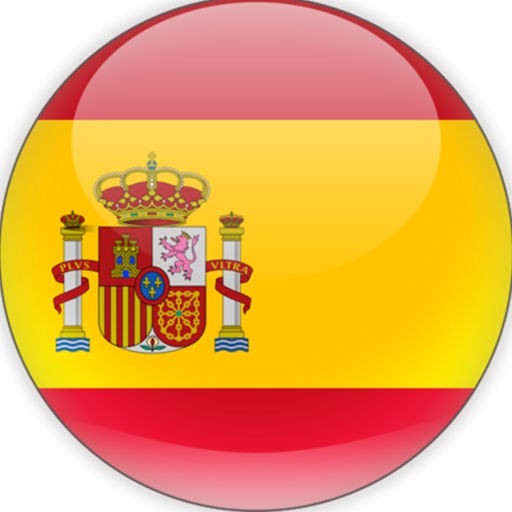
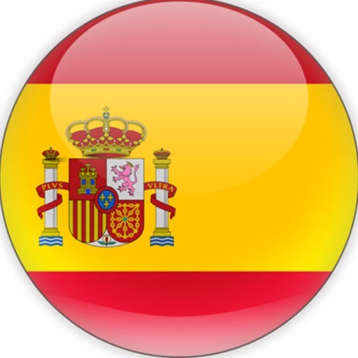

Olá! Seja bem vindo!
Sou o Girlei e este é o meu currículo.
Possuo longa experiência na área Administrativa/Financeira e almejo aliar esses conhecimentos com a área de Programação e desenvolvimento de softwares (TI), aprimorando skills em programação e visando o crescimento profissional.
Busco o acréscimo de qualidade na execução de tarefas a fim de atingir os objetivos, realizando-os com organização e planejamento.
Tenho como objetivos pessoais o desenvolvimento do conhecimento profissional, bem como, o aprimoramento de habilidades com a prática em novas experiências.
Optei por separar meu histórico em três grandes áreas de pesquisa e atuação...
Tecnologia · Cultura · Saúde
Existe outra área de interesse, de Investimentos, mas no momento optei por não apresentá-la neste material.
Atualmente busco oportunidades na área de Tecnologia, contudo acredito ser importante mostrar o background que possibilitou-me construir meu perfil.
Em minha vida existe uma máxima que é a Educação, assim, sempre procurei fazer cursos em diversas áreas e, certamente, continuarei buscando aprender. Acredito que aprender é uma força motriz que nos motiva a melhorar constantemente.
CONTATO
E-mail: girlei.both@yahoo.com.br
Telefone: +55 51 991 492 962
Residência: Brasil-BRA | Porto Alegre/RS
Nascimento: 31/12/1987
REDES SOCIAIS

DESENVOLVEDOR FRONT-END - Junior
FORMAÇÃO
Instituição: SENAC/RS
Título: Técnico em Desenvolvimento de Sistemas
Período: 04/04/2022 a 22/01/2024 (Em andamento)
Conteúdo:
Módulo I:
-Planejar o desenvolvimento de software
-Desenvolver algoritmos
-Auxiliar na modelagem e manipulação de banco de dados
-Auxiliar na administração de banco de dados
-Projeto integrador I
Módulo II:
-Desenvolver código orientado a objetos
-Auxiliar na elaboração de projeto de sistema orientado a objeto
-Desenvolver interface para melhor experiência do usuário.
-Desenvolver e organizar interface gráfica para aplicações desktop
-Programar aplicativos computacionais com integração de banco de dados para desktop
-Projeto integrador II
Módulo III:
-Gerenciar a configuração e versionamento de Software
-Executar testes e realizar melhorias em aplicativos computacionais
-Desenvolver e organizar interface de usuário e elementos visuais para aplicações web. (front-end)
-Programar aplicativos computacionais com integração de banco de dados para web. (back-end)
-Projeto integrador III
Carga horária total do curso: 1.200 horas.
EXPERIÊNCIAS
Procurando oportunidades de estágio.
Atualmente estou investindo em meus estudos de programação e conhecendo os conceitos em tecnologia de informação a fim de realizar uma transição de carreira para a área de TI.
CURSOS
Instituição: IFRS - INSTITUTO FEDERAL
Título: Automação de Sistemas (Curso de Extensão)
Conteúdo: Automação e Projeto; Robótica e Indústria; Máquinas e Redes.
Período: 25/08/2022 a 10/10/2022 | Carga-horária: 30 horas
Instituição: UDEMY
Título: Visual Studio 2019 Avançado
Conteúdo: Visual Basic com Mysql - O curso de Visual Studio 2019 Avançado possui 60 vídeo aulas, ele pode ser acompanhado também com as versões 2015 ou 2017, neste curso o aluno vai aprender a trabalhar com a plataforma usando recursos avançados como upload de imagens, componentes como timers, relacionamento entre tabelas, relatórios e muito mais. (Nível Especialista, Engenharia de Software)
Período: Concluído em 11/01/2021 | Carga-horária: 6 horas
Título: Programador Back End - Visual Studio 2019
Conteúdo: Visual Basic e Msyql - O curso de Programador Back End com Visual Studio 2019 e Visual Basic possui 60 vídeo aulas, ele pode ser acompanhado também com as versões 2015 ou 2017, neste curso o aluno vai aprender a trabalhar com a plataforma usando a linguagem Visual Basic como programador back end, pegando um projeto desenvolvido por um front end e aplicamos a comunicação com o banco de dados mysql onde fazemos todo o crud inserindo dados, editando, criando consultas e muito mais. (Nível Intermediário, Engenharia de Software)
Período: Concluído em 29/06/2019 | Carga-horária: 5,5 horas
Título: Curso de Visual Studio 2019 - Desenvolvimento Front End
Conteúdo: Programando em Visual Basic - O curso de Visual Studio 2019 possui 65 vídeo aulas, ele pode ser acompanhado também com as versões 2015 ou 2017, neste curso o aluno vai aprender a trabalhar com a plataforma usando a linguagem Visual Basic em projetos do tipo windows forms. (Nível Iniciante, Engenharia de Software)
Período: Concluído em 10/06/2019 | Carga-horária: 6 horas
Instituição: EURODATA – Cursos de Informática
Título: Integrado de Ambiente Windows XP
Período: 04/11/2004 a 01/11/2005
ADMINISTRAÇÃO e FINANÇAS
FORMAÇÃO
Instituição: FUNDATEC – Escola Profissional
Título: Técnico em Administração – EaD
Período: 01/03/2015 a 01/12/2016
Conteúdo:
Módulo I - Total de Horas: 316
Produção e Logística Organizacionais
Língua Portuguesa: Comunicação Oral e Escrita
Conceitos e Princípios de Administração
Recursos Humanos nas Organizações
Finanças Organizacionais
Informática Básica
Planejamento e Diagnóstico
Matemática Aplicada e Estatística Básica
Fundamentos da Qualidade
Módulo II - Total de Horas: 340
Gestão de Projetos
Língua Estrangeira
Língua Portuguesa: Comunicação Empresarial
Administração Financeira
Matemática Financeira
Gestão de Riscos
Marketing
Contabilidade Aplicada
Legislação Tributária e Empresarial
Metodologia Científica
Módulo III - Total de Horas: 344
Empreendedorismo
Legislação
Administração de Recursos Humanos
Sustentabilidade e Gestão Ambiental
Sistemas de Informação Gerencial
Segurança do Trabalho e Saúde Ocupacional
Gestão de Processos – Indicadores da Qualidade
Organização, Sistemas e Métodos
Criatividade e Inovação
Tutoria para Trabalho de Conclusão do Curso
Carga Horária Total do Curso: 1000 horas
EXPERIÊNCIAS
Empresa: AAMARGS - Associação dos Amigos do Museu de Arte do Rio Grande do Sul Ado Malagoli
Cargo: ASSISTENTE ADMINISTRATIVO
Período: 20/11/2016 a 31/07/2022 (Meio período - total 5 anos 9 meses)
Atribuições: - Controle financeiro (prestação de contas a contabilidade, conferência de Notas Fiscais, controle de contas à pagar);
- Administrativo (elaboração de termos, contratos, ofícios, recibos, Atas etc.);
- Logística (compra de materiais de expediente e equipamentos, locação de materiais para eventos);
- Gestão de sócios (cadastro, boletos, carteirinhas, recibos etc.);
- Gestão de cessionários (boletos, cálculos de consumo, renovação de contrato etc.);
- Gestão de cursos (contato com professores, agendamentos, cobrança pelo uso de espaço, emissão de certificados etc.);
- Gestão de uso de espaço (envio e verificação de informações dos eventos, agendamentos, cobrança pelo uso de espaço etc.);
- Comunicação (divulgação de eventos da Associação: cursos, palestras, feiras de arte, concertos, confraternizações. Mídias: Mailing, Website e Facebook; Whatsapp e telefone);
- Projetos (Auxílio na gestão e controle financeiro de projetos culturais - Leis de incentivo (BRA) e Grants (EUA);
- Cadastro de documentários na plataforma da ANCINE.
Competências: Gestão de associações · Conciliação bancária · Administrador de banco de dados · Processos de compras · Elaboração e preparação de documentos · Atualização de sites · Administração de subsídios · Comunicação · Visual Basic · Microsoft Excel · Contabilidade · Gestão de projetos · Administração financeira · Finanças
Empresa: AAMARGS - Associação dos Amigos do MARGS
Cargo: ESTÁGIO ADM./FINANCEIRO
Período: 18/05/2015 a 18/11/2016 (Meio período - 1 ano 7 meses)
Atribuições: Pagamento de contas e fornecedores, emissão de boletos, contratos, termos entre outros documentos. Controle e construção de planilhas de gerenciamento financeiro (alinhadas com a contabilidade), além de realização de conciliação bancária. Comunicação com os associados e interessados em associar-se. Gestão de cursos, organização, comunicação, pagamentos etc. Compras de materiais administrativos. Entre outras atividades que estavam ligadas a manutenção do Museu por intermédio da Associação de Amigos.
Competências: Administração · Comunicação · Visual Basic · Microsoft Excel · Contabilidade · Gestão de projetos
Empresa: HOTEL PRAÇA DA MATRIZ
Cargo: APOIO ADM./FINANCEIRO (Suporte administrativo)
Período: 18/01/2017 a 29/06/2017 (Temporário - 6 meses)
Atribuições: Controle e construção de planilhas financeiras, fluxo de caixa, pagamento de despesas mensais, fornecedores, guias de tributos e encargos sociais. Auxílio na realização de reservas. Apoio na conciliação bancária.
Competências: Gestão hoteleira · WordPress · Administrador de banco de dados · Atualização de sites · Microsoft Excel · Contabilidade · Administração financeira
Empresa: FUNDATEC - Fundação Universidade Empresa de Tecnologia e Ciências
Cargo: FISCAL DE CONCURSO
1ª Participação: Concurso Público 568 - Assistente Administrativo (Prefeitura Municipal de Porto Alegre/RS)
Período: 29/03/2016 (Temporário)
2ª Participação: Concurso Edital 353/2015 - Agente Administrativo (Ministério Público)
Período: 27/05/2016 (Temporário)
Atribuições: Participação da Equipe de execução de Concurso na empresa Fundatec. Com responsabilidades de aplicar e controlar o ambiente da realização das provas. Fazer-se cumprir as regras presentes nos editais. Esclarecimento de dúvidas e orientações relacionadas a dinâmica de aplicação das provas.
Competências: Regras de validação · Aplicação da lei
CURSOS
Instituição: SEDAC/RS - Secretaria de Estado da Cultura do Rio Grande do Sul
Título: Gestão Pública de Cultura: desafios dos processos participativos
Período: 24/10/2021 a 26/10/2021
Título: Conheça em Detalhes o Sistema Estadual de Fomento
Período: 29/11/2021
Título: Direitos Inalienáveis, ODS e Cultura
Período: 02/12/2021
Conteúdo: O Programa Estadual de Formação e Qualificação na Área Cultural, é um investimento na formação dos profissionais de cultura e sociedade civil, com uma visão que busca instigar a sua capacidade crítica, intelectual e de visão organizadora do setor, para refletir, discutir e pesquisar sobre o significado e o valor de se trabalhar com cultura e arte.
Instituição: SEBRAE/RS
Título: Oficina de Plano de Marketing
Período: 17/07/2012 a 19/07/2012 | Carga horária: 8h
Instituição: MICROLINS – Formação Profissional
Título: Rotinas Administrativas
Conteúdo: Ensino Médio Profissionalizante (Pós-médio)
Período: 18/08/2008 a 02/03/2009 | Carga horária: 72h
Instituição: AAMARGS - Associação dos Amigos do MARGS
Título: Curso de Mangá
Conteúdo: criação de história em quadrinhos simplificada; elementos fundamentais de desenho: figura humana, proporções, perspectiva, luz e sombra, ângulos, etc.; argumento e roteiro. Registro: 507 - SEDAC/RS
Período: 20/05/2006 | Carga horária: 32h
Instituição: QI – Escolas e Faculdades
Título: Curso Profissionalizante
Conteúdo: Ensino Médio Profissionalizante (Pós-médio) - Introdução a informática, word, windows, excel, power point, criação de home page,, conceitos em hardware, assistente administrativo, qualidade total, assistente de departamento pessoal, técnicas de negociação, assistente de contabilidade, marketing pessoal.
Período: 11/08/2006 a 31/03/2007 | Carga horária: 162h
Instituição: EURODATA
Título: Qualificação Profissional em Contabilidade e Departamento de Pessoal
Período: 28/04/2006 a 16/06/2006 | 10/03/2006 a 12/05/2006
PROJETOS E PUBLICAÇÕES
Título: GESTÃO ESPORTIVA: Estudo de caso nos clubes Sport Club Internacional e Grêmio Foot-Ball Porto Alegrense.
Instituição: Fundatec
Período: Concluído em 21 de dez de 2016
Conteúdo: Trabalho de conclusão de curso apresentado como requisito parcial para a obtenção do grau de Técnico em Administração pela Escola Profissional Fundatec.
EDUCAÇÃO FÍSICA
FORMAÇÃO
Instituição: UFRGS – Universidade Federal do Rio Grande do Sul
Título: BACHARELADO EM EDUCAÇÃO FÍSICA
Período: Ingresso em 2010/2 | Concluído em 2014/2
Conteúdo: "O curso gradua bacharéis e licenciados aptos a atuar nos campos da prevenção, promoção, proteção e reabilitação da saúde, da formação cultural, da educação e reeducação motora, do rendimento físico-esportivo, do lazer, da gestão de empreendimentos relacionados às atividades físicas, recreativas e esportivas, além de outros campos que oportunizem ou venham a oportunizar a prática destas atividades, em ambientes diferenciados da rede escolar formal." Fonte: UFRGS
Processo Seletivo: Vestibular
Data de Conclusão de Curso: 20/12/2014
Data de Expedição do Diploma: 24/02/2015
Diploma registrado sob o nº 585, livro G-13, fl 98, em 24 de fevereiro de 2015, por delegação de competência do Ministério da Educação, nos termos da Lei n° 9.394, de 20 de dezembro de 1996, e do Decreto n° 9.235, de 15 de dezembro de 2017.
Total de horas cursadas com aprovação na UFRGS: 3645h
ATESTADO DE CLASSIFICAÇÃO FINAL DE CURSO:
"A Universidade Federal do Rio Grande do Sul atesta, para os devidos fins, que GIRLEI BOTH DE MATOS concluiu o curso de graduação em EDUCAÇÃO FÍSICA, currículo BACHARELADO EM EDUCAÇÃO FÍSICA, desta Universidade, no 2º semestre de 2014, colação de grau em 12 de fevereiro de 2015, e obteve o 8º lugar entre os 36 formandos na classificação final do curso, com média final 8,882 (escala de 0 a 10)."
EXPERIÊNCIAS
Empresa: PROJETO CELARI – UFRGS
Cargo: ESTÁGIO PROFISSIONAL EM SAÚDE E LAZER
Período: 31/03/2014 a 20/07/2014 (5 meses) | Carga Horária: 150
Atribuições: Elaboração e aplicação de atividades físicas/exercícios nas modalidades de Jogging Aquático (modalidade de exercício realizada em uma piscina funda. O participante utiliza um colete flutuador que o mantém na posição vertical e não permite o apoio do pé no fundo da piscina. Durante o exercício, o aluno simula o movimento de uma caminhada e/ou corrida) e Musculação (conjunto de exercícios que visam o fortalecimento e o crescimento dos músculos) no Centro de Estudos de Lazer e Atividade Física do Idoso CELARI que é um Programa de Extensão Universitária da UFRGS.
Competências: Promoção da saúde · Educação física · Terapia aquática · Musculação · Prescrição de exercícios
Empresa: UFRGS
Atribuições: Monitoria Acadêmica na UFRGS. Auxílio na criação e aplicação das atividades e exercícios realizados em aula durante o semestre letivo.
*Conformidade com o estabelecido no decreto nº 85.862/81 e Art 84 da Lei nº 9.394, de 20 de dezembro de 1996, com carga horária de 20 horas semanais.
1º Cargo: Monitor – Disciplina – Futebol Fundamentos (Presencial – Voluntária)
Período: de 30/09/2011 a 21/12/2011 (4 meses)
Competências: Treinamento de futebol · Planejamento de aulas · Prescrição de exercícios
2º Cargo: Monitor – Dinamização de Programas Recreativos e de Lazer (À Distância, utilizando tecnologia EAD - Remunerada)
Período: 1 ano 10 meses
de 05/03/2014 a 19/07/2014
de 04/08/2014 a 20/12/2014
de 12/08/2013 a 20/12/2013
de 20/03/2013 a 20/07/2013
Competências: Controle de projetos · Moodle · Tecnologias educacionais · Educação à distância · Planejamento de aulas
CURSOS
Título: Salão UFRGS 2013: SIC - XXV SALÃO DE INICIAÇÃO CIENTÍFICA DA UFRGS
Conteúdo: Participação em palestras durante o evento.
Período: de 21/10/2013 a 25/10/2013, com carga horária de 5 horas.
Título: SIC2011 - XXIII SALÃO DE INICIAÇÃO CIENTÍFICA DA UFRGS
Conteúdo: Participação em palestras durante o evento.
Período: de 03/10/2011 a 07/10/2011, com carga horária de 4 horas.
Título: SIC 2010 - XXII SALÃO DE INICIAÇÃO CIENTÍFICA DA UFRGS
Conteúdo: Participação em palestras durante o evento.
Período: de 18/10/2010 a 22/10/2010, com carga horária de 4 horas.
PROJETOS E PUBLICAÇÕES
Título: Gestão no futebol: marketing e sua estruturação, procedimentos organizacionais utilizados em quatro dos principais clubes de futebol do RS.
Instituição: UFRGS-LUME
Período: Concluído em 1 de jan de 2014 | Carga Horária: 60
Conteúdo: Trabalho de conclusão de graduação. Universidade Federal do Rio Grande do Sul. Escola de Educação Física. Curso de Educação Física: Bacharelado.
Título: Depoimento de Fábio Ritter
Instituição: UFRGS-LUME
Período: Concluído em 15 de set de 2014
Conteúdo: Gestão no futebol; importância que o Grêmio atribui ao marketing esportivo; atribuições do departamento de marketing do clube; perfil do profissional de marketing; critérios e estratégias para o departamento de marketing fidelização do torcedor; perspectivas futuras para o marketing esportivo.
Título: Depoimento de Adauri Régis Gonçalves da Silveira
Instituição: UFRGS-LUME
Período: Concluído em 2 de set de 2014
Conteúdo: Gestão no futebol; importância que o Sport Clube Internacional atribui ao marketing esportivo; atribuições do departamento de marketing do clube; perfil do profissional de marketing; critérios e estratégias para o departamento de marketing fidelização do torcedor; perspectivas futuras para o marketing esportivo.
Título: Depoimento de Stefano Ditadi
Instituição: UFRGS-LUME
Período: Concluído em 1 de set de 2014
Conteúdo: Gestão no futebol; importância que o Esporte Clube Juventude atribui ao marketing esportivo; atribuições do departamento de marketing do clube; perfil do profissional de marketing; critérios e estratégias para o departamento de marketing fidelização do torcedor; perspectivas futuras para o marketing esportivo.
Título: Depoimento de Leonardo Antunes
Instituição: UFRGS-LUME
Período: Concluído em 1 de set de 2014
Conteúdo: Gestão no futebol; importância que o S.E.R. Caxias atribui ao marketing esportivo; atribuições do departamento de marketing do clube; perfil do profissional de marketing; critérios e estratégias para o departamento de marketing fidelização do torcedor; perspectivas futuras para o marketing esportivo.
IDIOMAS
 Portugês: Fluente
Inglês: Intermediário

Espanhol: Intermediário
Portugês: Fluente
Inglês: Intermediário

Espanhol: Intermediário
 Francês: Básico
Francês: Básico
Instituição: IFRS - INSTITUTO FEDERAL
Título: Inglês 1 (Curso de Extensão)
Conteúdo: Identificação e Caracterização Pessoal; Localização no Tempo e no Espaço.
Período: 21/11/2021 a 14/12/2021 | Carga-horária: 30 horas
Título: Inglês 2 (Curso de Extensão)
Conteúdo: Meios de Transporte; Família; Rotina e Hábitos – Em Casa.
Período: 14/12/2021 a 30/01/2022 | Carga-horária: 30 horas
Instituição: DUOLINGO
Título: Inglês, Espanhol e Francês
Conteúdo: Site e aplicativo móvel de aprendizado de idiomas. Com exercícios práticos de vocabulário, gramática e pronúncia usando repetição espaçada. Os exercícios podem incluir tradução escrita, compreensão de leitura e fala e histórias curtas.
Período: Estatísticas (em 18/10/2022): 725 dias seguidos de prática
HABILIDADES
Linguagens: Visual Basic, VBA Excel, C#, HTML e CSS ...
Banco de dados: MySQL e MongoDB
Sistemas operacionais: Linux e Windows; Microsoft Office e Libre Office
Ferramentas: Canva, Trello, Github, Wordpress, Sketchup, Mailchimp, Inkscape, GIMP, entre outras...
Obs.: Elementos básicos


Repositório no GitHub

Obs.: No link acima é possível acessar o conteúdo utilizado para programação desta página em HTML, CSS e JavaSrcipt.

☏ 51 991 492 962
✉ girlei.both@yahoo.com.br
© Girlei Both de Matos